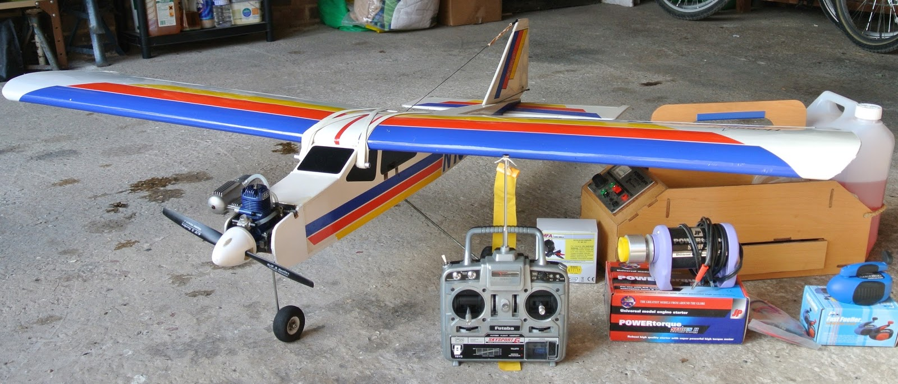
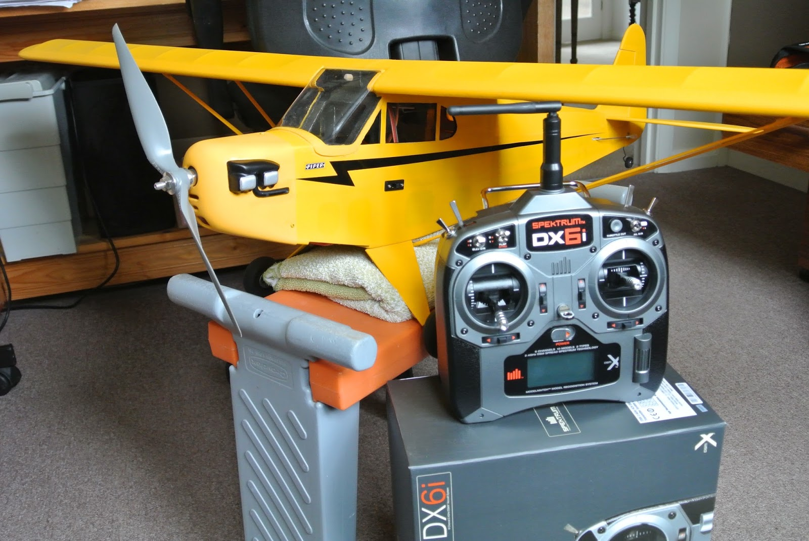

Radio Controlled Aircraft
Move to Electric
Having built an electric powered plane I decided that I would stick with electric and so decided to sell my IC trainer, 35MHz transmitter, flight box and associated gubbins. So I decided to market it as a 'starter kit'.
On Saturday and Sunday the 8th and 9th of August 2015 the flying club had its 'Fun Weekend' up at the flying site and there was a marquee for selling things. To my surprise, my starter kit was bought on the first day by a new member of the club. The guys found another Futaba 35MHz transmitter with a 'buddy' lead and the purchaser spent Saturday and Sunday learning to fly.
I sold the lot for £75 (which was probably quite good value) and gave £5 to the Air Ambulance fund. However, that left me without a transmitter to use with my Cub!
Choice of System
One of the experienced club members had commented that 35MHz radio was good for IC powered aircraft and gliders, particularly now that so few people used it, but electric powered planes produced a lot of interference that affected this radio band. I had put my erratic flying of the Cub down to my poor skills, but, perhaps ... So I decided to buy a basic 2.4GHz transmitter and receiver. I looked at the cheap systems sold under names such as Hobby King, Turnigy, Orange and FlySky, but none of the online product data seemed to mention the modulation techniques used unless they said they replicated DSM2 (a Spektrum modulation) or FHSS (a Futaba modulation). Having designed and built my own prototype TX/RX I know how important the software is. So I decided to stick with the market leaders and chose something from the Spektrum or Futaba ranges.
My understanding is that Futaba started their 2.4GHz range using FHSS (Frequency Hopping Spread Spectrum), basically switching channels several times each second, whereas Spektrum used DSM2 which selects two lightly used channels and then uses DSSS (Direct Sequence Spread Spectrum), switching channels if necessary. I believe that Spektrum actually use the same Cypress Semiconductor RF chip that is in the ArtaFlex RF module that I use in my prototype. Futaba then brought out their FASST (Futaba Advanced Spread Spectrum Technology) system, which I believe adds their version of DSSS to their frequency hopping. Meanwhile Spektrum added frequency hopping to their DSSS approach in their DSMX technology.
So there is little to chose between them. Futaba use their own proprietary RF chip, whereas Spektrum use a chip produced by Cypress (which is used in a lot of other types of application) and Futaba products are significantly more expensive than those from Spektrum. At the club flying site you probably see more Spektrum transmitters than Futaba.
Since I am very comfortable with the technology used by Spektrum and I could get a six-channel DX6i transmitter with an AR610 receiver for £80 from Kings Lynn Model Shop (plus £5 delivery), £20 cheaper than my local model shop, I decided to go with this and ordered a system on Friday 14th August 2015. It arrived early on Monday the 17th.
So I installed the receiver in the Cub, bound the transmitter and receiver, inverted the elevator control and checked that all surfaces move in the required direction. The transmitter holds ten models in its memory, so I set up one for the Cub. I also set up the transmitter on the simulator. Now it is just finding a suitable time to go flying!